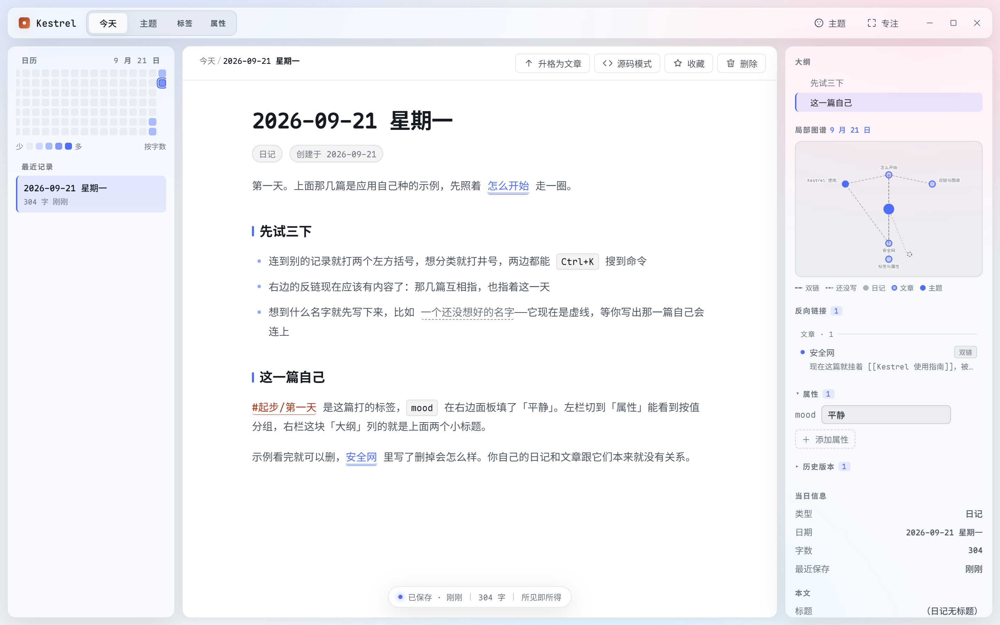
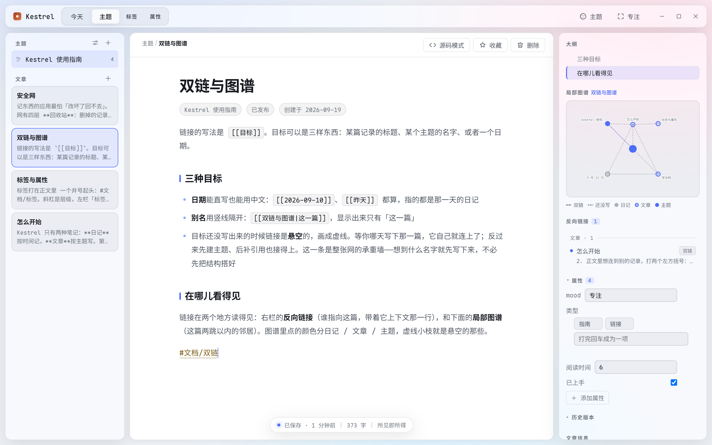
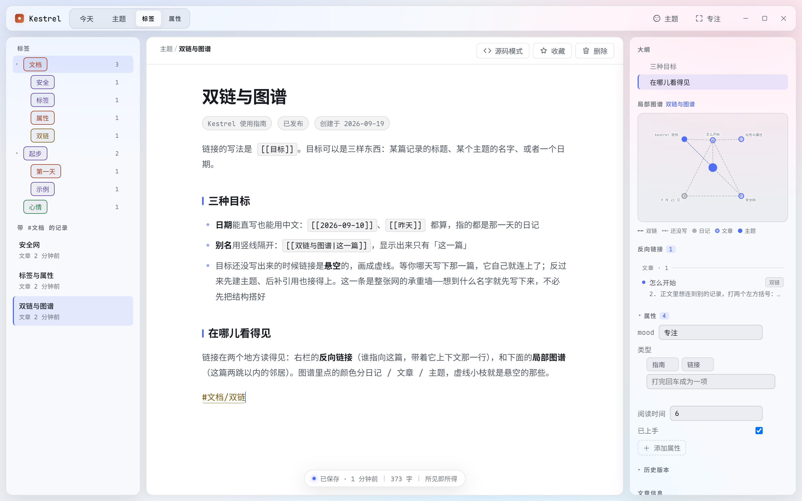
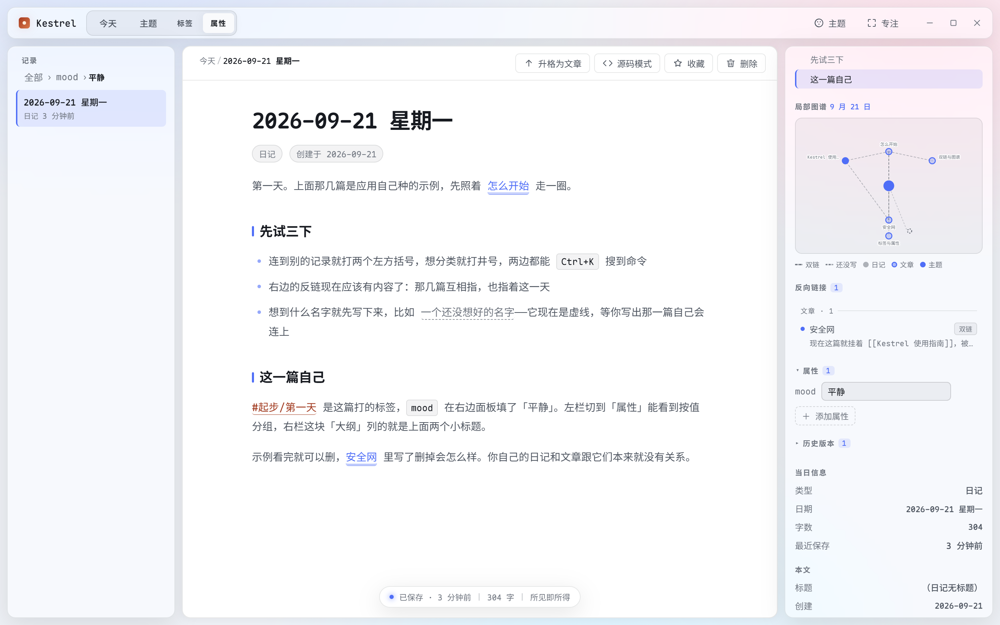
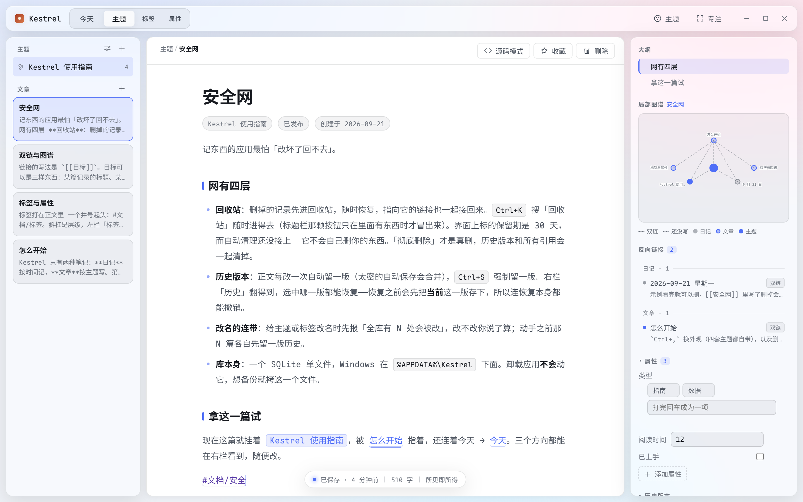
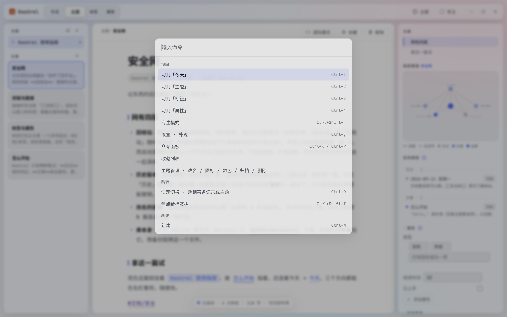
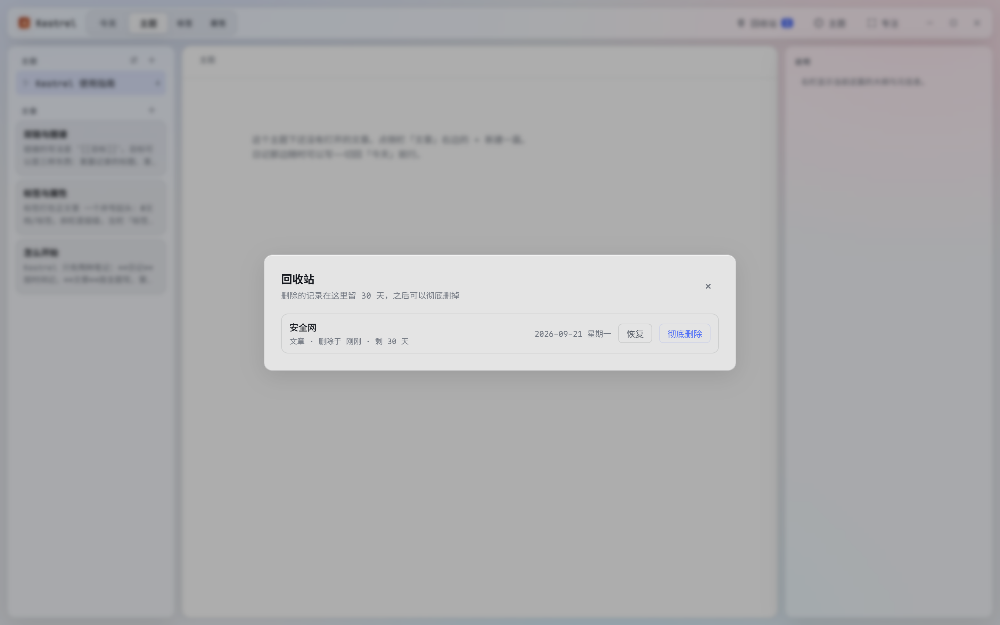
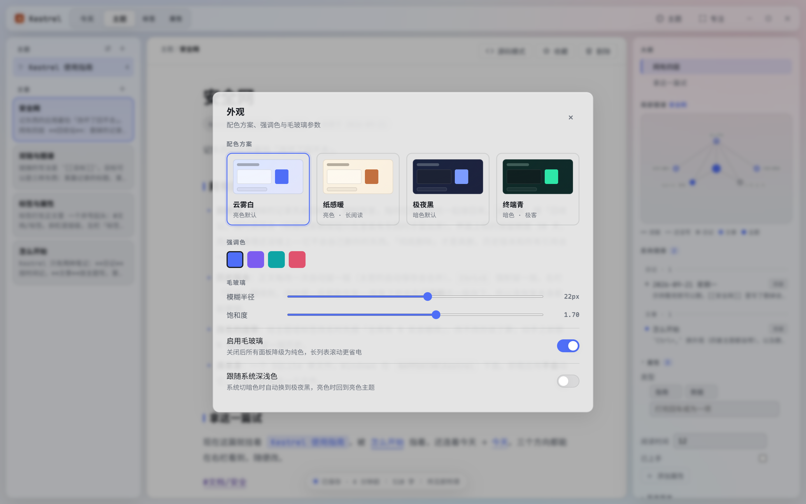
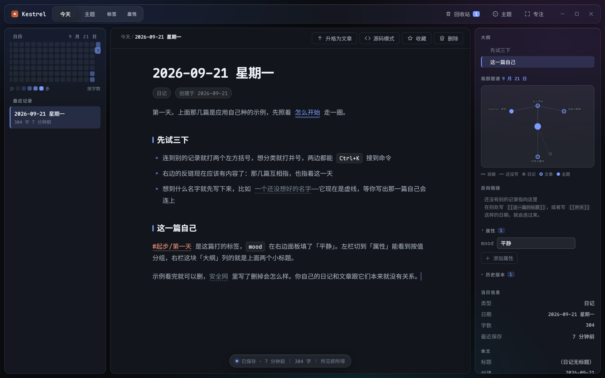

Kestrel
把「按时间记的日记」和「按主题写的文章」放在同一个屋顶下的本地优先笔记软件。
◆ 当前 v0.1.0 · Windows · Electron 桌面应用
它解决的是什么问题
大多数笔记软件只给你一种组织方式：要么一棵文件夹树，要么一堆标签。而记录欲其实有两种形状——日记按日期走，不关心它属于哪个主题；文章按主题走，日期不重要。Kestrel 把这两种形状做成一等公民，用同一种笔记体 [[双链]] 把它们缝起来：日记里写下的想法可以升格成文章，一个字都不用重打；文章里也可以直接指回某一天。
数据只有一个文件
SQLite。Windows 下在 %APPDATA%\Kestrel\kestrel.db。不需要账号，不需要联网。
零网络请求
整个应用不发起任何对外请求——没有统计、没有更新检查、没有云。字体是打包进安装包的。正文里的 http 链接被点击时交给系统浏览器打开，应用内不开新窗口。
卸载不会删你的日记
卸载程序被明确配置成不动 %APPDATA%\Kestrel。
v0.1.0 是基线版（大版本号还是 0）。它已经是一个每天能用起来的工具，但还不是一个成熟产品——已知的边界写在非目标和数据与隐私里。
下载
安装包发布在 Releases 页，文件名是 Kestrel-<版本>-setup.exe，按当前用户安装，不需要管理员权限，安装界面是中文的。
安装包没有代码签名。Windows 的 SmartScreen 会拦一次「未知发布者」，点「仍要运行」即可。介意这件事的话，也可以拉源码自己打：npm install 之后 npm run dist。
界面一览
左边是导航（今天 / 主题 / 标签 / 属性 四格），中间是正文，右边是当前记录的上下文（大纲、反向链接、局部图谱、属性、历史）。









记录
- 两种笔记体：日记按日期建，一天一篇；文章挂在主题下面。
- 自动保存：停下来半秒就落盘，状态条会写「已保存」。Ctrl+S 强制存并留一版历史。
- 三种编辑器模式：阅读、所见即所得（Tiptap）、源码（CodeMirror 6）。Ctrl+Shift+M 循环切换。
- 升格：日记写着写着变成文章，Ctrl+K 搜「升格」，选个主题，原文连同样式一起搬过去。
切换模式的「无损判据」
切换之前会先把正文重新解析一遍比对——只有确认无损才切过去；真会丢内容时拦下来并留在源码模式，状态条告诉你是哪几处。这条判据是硬门槛：宁可切不过去，也不悄悄吃掉你写的东西。
组织
- 双链
[[目标]]：目标可以是记录标题、主题名字，或一个日期（[[2026-09-10]]、[[昨天]]都算）。别名用竖线：[[目标|显示成别的词]]。 - 悬空链接是特性不是错误：目标还没写出来时画成虚线，等你哪天补上那一篇，它自己就连上了。
- 反向链接在右栏，带着上下文那一行。
- 局部图谱画当前记录两跳以内的邻居，颜色分日记 / 文章 / 主题。
- 嵌套标签
#父/子：标签只认正文，左栏的标签树会自动长出来，点父标签能把子孙的条目一起筛出来。中文标签不用打空格。 - 属性是「这篇自己带的结构化字段」，有
text / number / list / checkbox四种类型，属性名在全库共用一个类型。左栏第四格按值分组——这是标签做不到的一件事。 - 大纲在右栏，长正文不用滚。
- 收藏 Ctrl+D，收藏列表从命令面板进。
- 同时开几篇：一篇一个标签，Ctrl+T 新开、Ctrl+W 关掉、Ctrl+Tab 轮着切、Ctrl+Shift+←/→ 调顺序。每格带着自己的滚动位置和光标，双击那一格是固定（固定的不吃 Ctrl+W）。关掉应用再开，上次开着的那几篇、顺序、当前那一格、各自滚到哪儿了——都原样回来。
外观与 CSS 片段
Ctrl+, 是设置：外观（四套主题、强调色、毛玻璃参数、跟随系统深浅色）/ 编辑器（开应用落在哪一档）/ 片段 / 快捷键（全部键位的只读清单，可搜）/ 数据（每日快照开不开、留几份）/ 关于（版本、库结构、库文件在哪）。每一项都落进库里，重启还在。
再深一层不该由我们替你猜，所以留了一扇门：把 .css 丢进 %APPDATA%\Kestrel\snippets\，立刻改外观，删掉就撤回来。
- 生效顺序按文件名升序，跟你什么时候存盘无关；两份撞同一条选择器时，名字靠后那一份赢。
- 设置页那一格里能看到每一份的大小与改过的时间，能单独关掉某一份——关着的状态重启还在。超过 1 MB 的那一份不生效，但会列出来并写着为什么：静默失灵是最难查的那种失灵。
- 写坏了、把界面藏起来了？Ctrl+K 搜「暂停全部片段」，或启动时加
--no-snippets。这是不用重装就能自救的那两扇门，暂停只影响本次运行，不改任何勾。 - 一句实测出来的经验：直接改类选择器最稳（
.md-prose { ... }这种，不用加!important就盖得住应用自己那份样式表）。要换主题变量得写成body[data-theme] { --text-1: ... }——写成body {}或:root {}都压不住主题那一层。 - 片段是文件，不在库里：每日快照、导出、换库都不含它们。备份覆盖不到什么，这一条说在前头。
- 片段里写
@import url(http://…)或背景图外链都出不了网——CSP 现场就拦下（日志里那一句是 violates the following Content Security Policy directive，实测responseReceived计数为零）。这与「零网络请求」那句承诺是同一件事。
演示与回顾
写完了要能给人看，也要能翻回去看自己。
- 幻灯片：Ctrl+K 搜「演示这一篇」。在两个段落之间独占一行写
---就是分页（***、___、- - -一样算），全屏一屏一页，页脚写着3 / 12。→ ↓ Space PageDown 下一页，← ↑ Backspace PageUp 上一页，Home End 首尾，点屏幕左 / 右半边也能翻，Esc 退出。翻到头不循环、也不报错。 - 代码围栏里的那条
---不算分页：切分是一个带状态的行扫描（进围栏 / 出围栏），不是拿字符串切一刀。所以正文里贴的 diff、表格的分隔线、a---b都不会莫名多出页来。页与页之间不共享滚动位置：翻过去就是从头读。 - 只有一页时会给你一句提示（「这一篇没有分页符：在两个段落之间独占一行写
---就能分页」），不会悄悄把整篇当一页、让你以为功能坏了。字号在演示里比编辑时大一档，那是一层 CSS 放大，不改正文一个字。 - 演示那一层是模态的：开着的时候 Ctrl+K / Ctrl+W / Ctrl+Tab / Ctrl+, 一概不生效——演示底下不该有标签被关掉、文档被换掉。退出来之后那一格还在原处，文档与滚动位置都不动。
- 随机打开一篇：Ctrl+K 搜「随机」。它是新开一个标签而不是原地换——随机这件事的时机你无法预期，不该把你正在写的那一篇顶掉；屏幕上会报开的是哪一篇。连着按不会给出同一篇，回收站里的那些不参与。没有默认键位（「想起来才用」的那种）。
- 不做演讲者视图、备注与计时、自动播放，也不做「按标签随机」——筛选那件事查询块已经做了，日记也不是电视。
安全网四层
记东西的应用最怕「改坏了回不去」。这里的网有四层：
- 回收站：删掉的记录先软删除进回收站，随时可以恢复，指向它的链接也一起接回来。满 30 天才动刀：超过 30 天的那一些会在开应用时自动彻底删除，走的与「彻底删除」是同一把刀（历史版本和所有引用一起清）。而且这一刀只在当天那一份快照已经在盘上的时候才动手——它自己的回退路径就是那一份：自动备份关着、或那一份没落成的时候，它跟着不跑。等不及可以自己按「跑一次那一刀」，那一句是你当场下的令。
- 历史版本：正文每改一次自动留一版（同一篇两次自动快照至少隔 5 分钟，否则历史列表会变成一串「3 秒前 / 6 秒前」）；每篇最多留最近 50 版。Ctrl+S 强制留一版，不受这个门槛限制。右栏「历史」翻得到，选中哪一版都能恢复——恢复之前会先把当前这一版存下，所以连恢复本身都能撤销。超过 30 天的历史版本与回收站走同一把刀（上一条那两个条件一个不少）。
- 改名的连带：给主题或标签改名时先报「全库有 N 处会被改」，动手之前那 N 篇各自先留一版历史。
-
每日快照与换库：开应用时如果当天还没有那一份，就用
VACUUM INTO往%APPDATA%\Kestrel\backups\落一份，默认留最近 7 份（可设 3–30）。清单里每一份写着日期、篇数和大小，挑一份就能把整个库换回去；换之前当前库先自动存成kestrel-before-restore-…，所以两个方向都退得回去。别拿拷.db文件当备份：应用开着的时候那些写入还在-wal里，只拷主文件拷走的是一部缺了最近改动的库。卸载应用不会动这个目录。
快捷键
Ctrl+K 是命令面板，所有功能都能从那儿搜到——想不起键位就搜名字，不必背下面这张表。macOS 上 Ctrl 表示 ⌘。
| 键位 | 命令 | 说明 |
|---|---|---|
| Ctrl+K / Ctrl+P | 命令面板 | 按分组列出所有命令 |
| Ctrl+O | 快速切换 · 跳到某条记录或主题 | |
| Ctrl+T | 在新标签里打开… | 与 Ctrl+O 同一个面板，只是落点是新开一格 |
| Ctrl+W | 关掉当前标签 | 固定的那一格、以及最后一格都不关，也不关窗口 |
| Ctrl+Tab Ctrl+Shift+Tab | 往前 / 往后循环切标签 | |
| Ctrl+Shift+← Ctrl+Shift+→ | 当前标签左右挪一位 | 不跨过固定那道界；也可以直接把那一格拖过去 |
| Ctrl+F | 站内搜索 | 三档排序：综合（默认）/ 相关度 / 最近 |
| Ctrl+G | 打开全局图谱 | |
| Ctrl+Shift+G | 打开全局图谱 · 时间轴 | 密度格子与跨年同日那一档 |
| Ctrl+1 Ctrl+2 Ctrl+3 Ctrl+4 | 切到「今天」/「主题」/「标签」/「属性」 | 左栏四格 |
| Ctrl+N | 新建 | 日记模式打开今天，主题模式下新建文章 |
| Ctrl+Shift+M | 循环切换编辑器模式 | 阅读 → 所见即所得 → 源码；切换前过一遍无损判据 |
| Ctrl+S | 手动保存 | 存盘并留一版历史 |
| Ctrl+D | 收藏 / 取消收藏当前记录 | |
| Ctrl+Shift+F | 专注模式 | |
| Ctrl+Shift+T | 焦点给标签树 | |
| Ctrl+, | 设置 | 外观 / 编辑器 / 片段 / 快捷键 / 数据 / 关于 |
只从命令面板进、没有键位的：升格为文章、主题管理、回收站、删除当前记录、收藏列表、插入查询块、查询与模板（存查询 / 模板管理）、表格那一组，设置 · CSS 片段、重读 CSS 片段、暂停全部片段（本次会话），演示这一篇（幻灯片）、随机打开一篇，以及 导出为 Markdown、从 Markdown 导回、备份与恢复、文件夹同步这四条。导出那一档一年用不了几次，占一个键位不如让人搜得到；同步这一档另有半个理由：那两颗按钮里有一颗会把当前库整个换掉，它不该做成"按一次回车就写盘"的默认行为。
演示那一层自己的键（→ ↓ ← ↑ · Space Backspace PageDown PageUp · Home End Esc）只在层里生效，没登记进全局命令表——登记了就会吃掉编辑器与列表的同名键。
Ctrl+F 是站内搜索，Ctrl+Shift+F 是专注模式——这一对与 Obsidian 的键位不一样，别按习惯按。
开几篇同时在手：在侧栏的文章卡上 Ctrl+单击 或按鼠标中键就是新开一格；中键点已经开着的那一篇是切到它那一格，不会多出第二格；双击标签固定它（固定的永远排最前，Ctrl+W 关不掉，得先取消固定）。固定没有键位，命令面板里有那一条。
第一次打开
空库会种下一篇指南主题和几篇示例（1 个主题 + 4 篇文章 + 当天日记），把双链、反链、图谱、标签树、属性分组、大纲这六样都真的用起来一遍——因为这几样都得「先有内容」才看得见。
它们都挂在同一个主题下面，看完删掉就行，删掉不会碰到你自己的任何一篇。
数据与隐私
- 库文件位置：Windows 下是
%APPDATA%\Kestrel\kestrel.db，一个 SQLite 单文件。 - 零网络请求：没有统计、没有更新检查、没有云；字体打包在安装包里。正文里的 http 链接被点击时交给系统浏览器打开，应用内不开新窗口。
- 卸载不动库：卸载程序被配置成不删
%APPDATA%\Kestrel。 - 每日快照：
%APPDATA%\Kestrel\backups\，一天一份（VACUUM INTO，含-wal里那些还没回写主文件的改动），默认留 7 份。快照只在本机，不做异地 / 云盘；换库是整库换文件，附件在旁边的attachments/目录里、不跟着快照走，所以那份库拿到另一台机器上会指向缺文件的位置。 - 导出与导回：整个库可以导成一棵 Markdown 目录树（frontmatter 铺在顶层，Obsidian 那类读得懂属性的编辑器打开就是原生形状），也可以把那棵导回库——认的是自家包头里的
kestrel-id。这一对只保证自家往返，不是通用导入器：别的软件导过来的目录，它一个字都不读。 - 多端 = 一个你挑的文件夹：命令面板搜「文件夹同步」。推 = 用
VACUUM INTO往那个夹里落一份完整的kestrel.db加一份kestrel-meta.json（先写.tmp再rename，那个夹里的同步盘永远只看到"整份文件出现了"）；换回来 = 走安全网第 4 层那条换库的路，换之前当前库照样先自保一份。应用自己不联网：把那个夹放进 Dropbox / OneDrive / Syncthing 是你在同步，不是应用在发请求。那一份是明文的完整日记——它在谁的云盘账号里，你的日记就在谁那儿；端到端加密还没做（它要连带一期"口令忘了怎么办"的设计）。那个夹里除了这两份文件出现的别的.db（比如同步盘的冲突副本），Kestrel 一概不读、不删。 - 冲突的时候它不猜：比的是「相对上次同步，哪一边动过」，两边都动过就停下，把两边的篇数和最后改动时间（到秒）并排摆出来，两颗按钮让人自己挑。"上次同步完两边长什么样"那一份记录每端各留一份、放在本地而不是那个夹里——放夹里两边就共用了一个"上一次"，而那个"上一次"必然对其中一端是假的。
这一版会自己删东西的地方，只有一处，写在这儿。回收站与历史版本满 30 天会在开应用时被自动彻底删除（与「彻底删除」同一把刀），而且只在当天那份快照已经在盘上的时候动手——自动备份关着或那一份没落成，它就不跑。除此之外程序不会自己删掉你的任何内容。
还有一件"它不会替你做"的事：同步没有定时器。推与拉两颗按钮都在人手上，两边都动过的时候它停下不猜。「云同步」「协作」这类词在这里仍然不是承诺，见上面「多端」那一条与非目标。
非目标
这些不是「还没做」，是不打算做：
- 不做云同步（应用自己不联网）。本地优先的全部意义在于数据只在你机器上。多端那一半的解法是你挑一个文件夹（见数据与隐私里「多端」那一条）：那个夹归谁搬由你决定，Kestrel 只是稳定地往里放两份、再稳定地拿回来，它自己不发起任何请求。WebDAV / S3 那种"应用自己连出去"的形态没做，因为它改的是本页开头那句「零网络请求」。手工拷那个
.db也行，但别拿它当备份，理由在安全网第 4 层。 - 不用
.md目录当存储格式。双链、反链、属性、历史版本这些跨文件的索引，一旦以文件为存储就得在每次打开时重算一遍，库一大就慢。这里存的是 SQLite，那棵 Markdown 是导出来的。已知的取舍：库文件损坏时没法像纯文本那样手工改。 - 不做协作与多人编辑。这是个人工具。
- 不做插件系统。要做的能力就直接做进主程序，否则界面一致性保不住。
- 不做移动端。
- 不追求和 Obsidian 功能对齐。它是最重要的参照对象，但参照的是交互习惯，不是清单。
Issues 开在这个仓库上。用不上 / 别扭 / 数据不放心，这三类反馈最值钱。